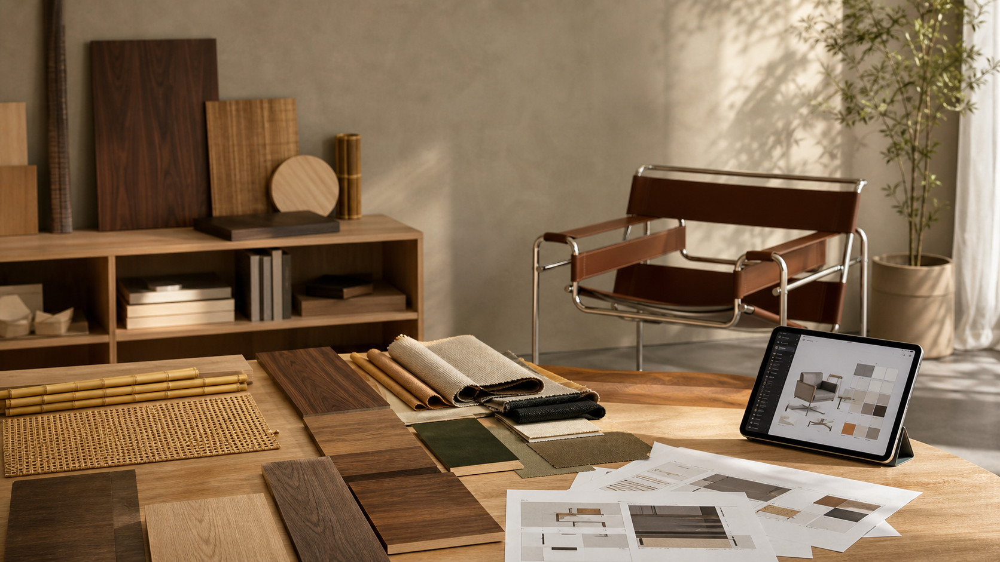

2026.07.20 가구·인테리어·목공 일일 트렌드

오늘의 흐름은 “좋은 물건을 만드는 일”과 “그 가치를 보이게 만드는 일”이 더 가까워지고 있다는 점입니다. 튜블러 스틸과 목재 같은 오래된 구조 언어는 다시 정교해지고, 전시와 리테일은 공예·기술·스토리텔링을 한 화면에 묶습니다. 동시에 3D 시각화와 프로모션 중심 소비는 공방의 견적, 사진, 샘플, 납기 설명 방식까지 바꾸라고 요구합니다.
1. Jil Sander x Thonet 확장은 ‘가벼운 구조’와 오래 쓰는 재료를 다시 전면에 세운다
Wallpaper*는 7월 16일 Jil Sander와 Thonet의 JS . THONET 컬렉션 확장을 보도했습니다. 새 S 411 라운지체어는 1932년 Thonet 공장 디자인의 S자형 캔틸레버 튜블러 프레임을 바탕으로 하고, S 1070 테이블은 Glen Oliver Low의 2004년 디자인과 Bauhaus 계열 테이블 언어를 다시 해석합니다. Thonet 공식 자료도 S 1070 테이블과 S 411 라운지체어가 Serious와 Nordic 두 방향의 색·마감 체계로 전개된다고 설명합니다.
왜 중요할까. 원목가구 공방도 “무거운 원목 덩어리”만으로 고급감을 설명하기보다, 얇은 금속·가죽·목재가 만나는 접합부와 비례를 통해 가벼움과 내구성을 함께 보여줄 필요가 있습니다. 특히 의자, 사이드테이블, 콘솔처럼 구조가 잘 보이는 품목은 프레임 선, 모서리 두께, 다리의 후퇴량을 설계 언어로 정리하면 브랜드 인상이 선명해집니다.
- Wallpaper*, Jil Sander expands her Thonet furniture collaboration · 2026.07.16
- Thonet 공식 보도자료, JS . THONET collection expansion · 확인 2026.07.20
2. London Design Festival 2026은 공예·AI·재료 혁신을 한 프로그램 안에 묶는다
London Design Festival은 7월 1일 2026년 24회 행사의 첫 프로그램을 공개했고, Wallpaper*도 7월 16일 이를 정리했습니다. 공식 발표는 9월 12~20일 열리는 행사가 전통 공예, 문화유산, 재료 혁신, 디지털 사고를 함께 다루며, Studio Saar와 Atelier One의 대나무 그리드셸 설치, MADE x Barbican 인테리어 컬렉션, Craft x Tech Tokai Project, V&A의 Awakenings 프로그램 등을 포함한다고 설명합니다.
왜 중요할까. 공모전이나 전시를 준비하는 목간 입장에서는 “예쁜 가구 한 점”보다 소재의 출처, 제작 방식, 디지털 도구 사용 이유, 생활 시나리오를 함께 설명하는 포맷이 유리합니다. 대나무, 종이, 염색, 칠보, 목재처럼 손기술이 강한 소재도 AI·디지털 전시와 충돌하지 않고, 오히려 작업의 맥락을 넓히는 장치가 될 수 있습니다.
3. La-Z-Boy는 3D Cloud 확대로 주문형 제품 이미지를 운영 인프라로 만든다
La-Z-Boy와 3D Cloud는 7월 15일 업그레이드된 3D Cloud 기술 도입 확대를 발표했습니다. PR Newswire 발표와 Furniture Today 보도에 따르면 이 시스템은 모든 제품·스타일 조합에 맞춘 주문형 이미지를 만들고, 향후 약 1,600만 장의 포토리얼 제품 렌더를 제공하는 것을 목표로 합니다. 회사는 맞춤형 가구 시각화, 옴니채널 쇼핑, 머천다이징, 디자이너 제안 작업을 함께 개선하겠다고 설명했습니다.
왜 중요할까. 소규모 공방도 대기업처럼 1,600만 장의 렌더를 만들 필요는 없지만, 수종·마감·손잡이·다리 형태별 기본 조합 이미지는 자산으로 쌓아야 합니다. 고객 상담 때 “상상해 보세요”라고 말하는 대신, 같은 조명과 각도에서 찍은 샘플 사진과 간단한 합성·3D 목업을 제공하면 견적 전환과 제작 오류를 동시에 줄일 수 있습니다.
4. Bellacor의 재출범은 ‘검색형 쇼핑’에서 ‘편집형 설계 자료’로의 이동을 보여준다
Furniture Today는 7월 16일 Bellacor가 웹사이트를 재설계하고 디자인 전문가 대상 단계형 trade program을 확장했다고 보도했습니다. 새 경험은 라이프스타일 사진, 비디오, 에디토리얼식 제품 스토리텔링, 스타일·생활방식·트렌드별 큐레이션, 향상된 제품 페이지와 명세 자료를 앞세웁니다. 단순히 많은 상품을 나열하기보다, 조명·가구·홈데코를 프로젝트 단위로 발견하게 만드는 방향입니다.
왜 중요할까. 목간의 제품 페이지와 포트폴리오도 품목명, 치수, 가격만으로는 부족합니다. 식탁이라면 “4인 아파트 다이닝”, “재택근무 겸용”, “아이 있는 집의 모서리와 마감”처럼 사용 장면별 묶음을 만들고, 사진 옆에 도면·수종·마감·관리 기준을 같이 배치해야 상담 자료로 기능합니다.
5. 미국 6월 소매 지표는 소비가 멈춘 것이 아니라 ‘할 이유’를 기다린다는 신호를 준다
미국 Census Bureau는 7월 16일 2026년 6월 소매·외식 판매가 전월 대비 0.2%, 전년 대비 6.7% 증가했다고 발표했습니다. 같은 날 Furniture Today는 전체 소비가 무너지지는 않았지만 가구·홈퍼니싱 매장 판매는 전월·전년 대비 사실상 정체에 가깝고, 소비자가 판촉 일정과 할인 창을 기다리는 경향이 강해졌다고 해석했습니다.
왜 중요할까. 맞춤 원목가구는 대형 할인전으로 승부하기 어렵습니다. 대신 견적 유효기간, 납기 확정 혜택, 관리 키트 포함, 리피니시 예약권, 세트 구매 시 설치·벽 고정 서비스처럼 가격을 깎지 않아도 “지금 결정할 이유”가 되는 조건을 설계해야 합니다. 할인보다 신뢰와 사후관리의 명확성이 평균 객단가를 지킬 수 있습니다.
오늘의 실무 인사이트
- 구조가 보이는 제품은 ‘가벼움의 근거’를 사진으로 남긴다. 다리 두께, 프레임 곡률, 금속과 목재의 접점, 상판 모서리 같은 디테일을 정면·측면·45도 사진으로 축적하면 디자인 설명과 공모전 패널에 바로 쓸 수 있습니다.
- 상담용 샘플을 제품별이 아니라 생활 장면별로 묶는다. 식탁, 콘솔, 수납장을 따로 보여주기보다 “좁은 다이닝”, “현관 수납”, “거실 책장 벽”처럼 문제 상황별 세트를 만들면 고객이 자신의 집에 적용하기 쉽습니다.
- 3D와 합성은 완성 이미지보다 선택지 검증에 먼저 쓴다. 수종, 손잡이, 하부 구조, 문짝 비례를 빠르게 비교하는 내부 검토용으로 시작하면 고비용 렌더 없이도 제작 실수를 줄일 수 있습니다.
- 할인은 마지막 수단으로 두고, 결정 조건을 설계한다. 사후관리, 납기 보장, 설치 점검, 마감 샘플 제공, 리피니시 안내처럼 공방만 줄 수 있는 혜택을 명문화하면 가격 경쟁을 피하면서도 구매 결정을 앞당길 수 있습니다.